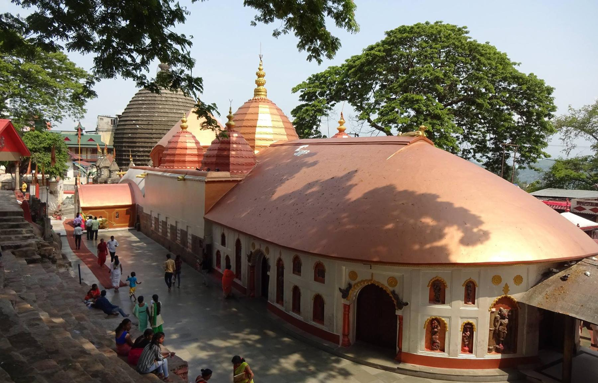

Tourism in North East of India
Information on different Historical places Of North East India
Akashganga Temple, Arunachal Pradesh
Akashganga Temple or Malinithan Temple in Arunachal Pradesh is dedicated to Goddess Durga. You can see Odisha style architecture in this temple, while the interiors have carvings of animals and flower motifs from the 14th-15th century.
Kamakhya Devi Temple, Assam
Located on the top of Nilanchal Hill in the capital city of Assam, Guwahati, Kamakhya Devi Temple is one of the most famous Hindu religious places in the northeast. The temple is dedicated to Goddess Kamakhya, who is believed to bestow tantric powers. It is also one of the 51 Siddha Shaktipeeths in the country. Every year a 3-days fair is conducted in June at the temple, which is called ‘Ambubasi Mela’. It is believed that Goddess Kamakhya goes through her yearly menstruation cycle during these three days. The fair is attended by saints, pilgrims, tantric, tourists from different corners of the country. During these three days, the temple remains closed and on the 4th day, the goddess is bathed by the priests in the temple.
Tripura Sundari Temple, Tripura

One of the major tourist attractions in the Northeast is Tripura Sundari located at Udaipur in Tripura. The main deity worshipped in this temple is Goddess Tripura Sundari. This is also one of the Siddha Shakti Peethas in the country. Tourists and devotees from all parts of the world visit this temple, especially during Diwali.
Tawang Monastery, Arunachal Pradesh
Tawang Monastery, a Buddhist pilgrimage site in the Northeast was founded in the 19th century and is one of the largest monasteries in Asia. The monastery is located at Tawang Valley and looks majestic. Tawang Monastery is visited by millions of tourists as well as devotees from across the country. Visiting this monastery will not only enable you to admire the beauty of the holy destination but you will also be able to get some peace of mind.
Umananda Temple, Assam
Umananda Temple or Umananda Devaloi is located in the middle of River Brahmaputra at Umananda Island, which is also called Peacock Island. The temple is dedicated to Lord Shiva and to reach the temple, you have to take a country boat.
Tourism Places of North East India
Nathula Pass, Sikkim

Once part of the ancient Silk Road, the 14,450 ft. high Nathula Pass is a popular tourist spot. A few hours’ drive east of Gangtok, Nathula Pass offers tourists a welcome break from the hustle and bustle of city life. Hire a cab and drive down the road towards the pass, often called one of the scariest roads in India, to enjoy the beauty of this hillside and catch a glimpse of the Chinese side of the border. Regardless of the time of year you visit, this is one place you’ll always see some snow.
Kaziranga National Park, Assam

The Kaziranga National Park, a UNESCO World Heritage Site, with its dense forests, elephant-grass meadows, and swampy lagoons is home to the largest Indian rhinoceros population. The park is one of the best known biodiversity hotspots in India with four pre-defined tourist circuits. Each of these circuits has its own distinguishing feature. This 430 square kilometer national park is also the breeding ground for many other animals and birds.
Ziro Valley, Arunachal Pradesh
Surrounded by mountains that reach the sky, Ziro Valley is home to the Apatani tribe. There are a number of trekking routes around this valley that makes it one of the most popular adventure spots in Northeast India. Apart from the scenic beauty, the Ziro valley offers tourists an insight into the local culture and tribal lifestyle. It is also the venue for one of India’s most popular annual music fests.
Cherrapunji and Mawsynram, Meghalaya

Rainfall can be beautiful! Located about 80 km apart, Cherrapunji and Mawsynram are the wettest places on earth. Both Cherrapunji and Mawsynram receive over 450 inches of rain every year and are blessed with panoramic vistas of scenic beauty. These hills offer a number of trekking routes too. No matter when you visit these family destinations in Northeast India, you’ll always be able to see and hear the beauty of raindrops falling from the sky.
Kohima, Nagaland
People in Kohima enjoy an unhurried pace of life. Tourists from around the world come here every year to enjoy the slow paced life and the scenic beauty Kohima is known for. The hills here are home to a few rare bird species. From its World War II cemetery to beautiful lakes, the town has a number of tourist sites worth visiting. Kohima is also where tourists can explore the rich tribal culture of Northeast India.
Imphal, Manipur
Nestled amidst forested hills, Imphal is a rejuvenating retreat especially for people living in chaotic cities. For them, Imphal offers picturesque hills and valleys. It is well-known as a honeymoon destination in Northeast India. The place has a number of historical monuments that showcase the state’s cultural diversity. To have an all-round experience of Imphal, you must sample the culinary delights of this state.
Geographical Importance of North East.
The North East India is a part of Indo-Malayan biodiversity hot-spot. The region is rich in biodiversity with maximum endemic species. Such a rich biodiversity needs to be conserved. ABSTRACT North East India is the geographical 'gateway' for much of India's flora and fauna and as a consequence, the region is one of the richest in the world in biological values. Within India, the north eastern part is the richest in floristic diversity and thus has immense valuable genetic resources which are now threatened to extinction unless urgent and proper actions are taken to conserve these valuable forest genetic resources at local, national and international level. The paper describes in detail the recorded forest genetic resources of the region in general and the constituents states of the region separately in particular.
THANK YOU
Name-Kabir Jhamb
Class-IX-C
Roll No-19
Admission Number-10865